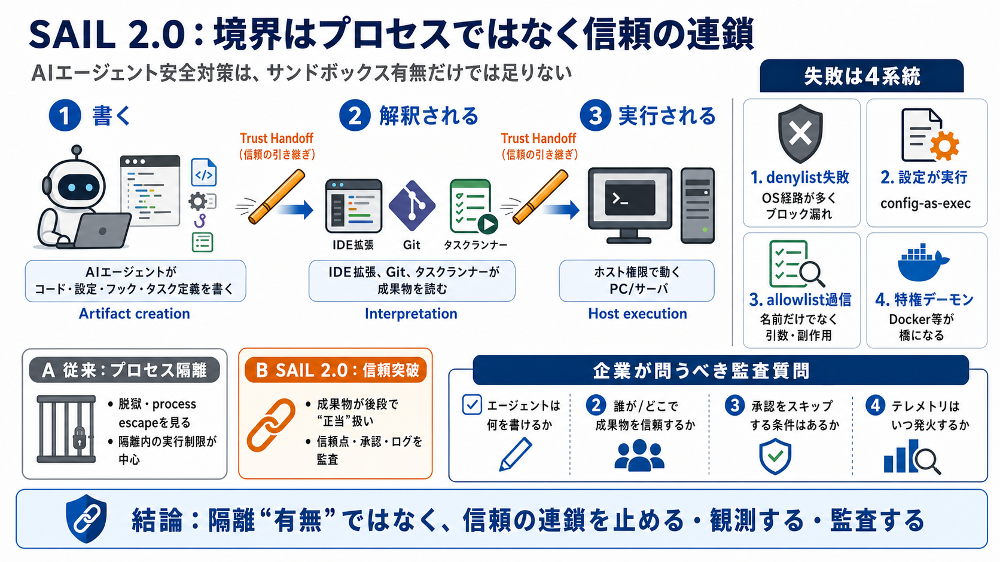

Pillar Blog | Latest stories about AI Security
Introducing SAIL 2.0 Framework: A Practical Guide to Secure AI Agents.png). # The Week of Sandbox Escapes. The Week of S…

Introducing SAIL 2.0 Framework: A Practical Guide to Secure AI Agents.png). # The Week of Sandbox Escapes. The Week of S…
# Vuln in Google’s Antigravity AI agent manager could escape sandbox, give attackers remote code execution. Google’s hig…
Introducing SAIL 2.0 Framework: A Practical Guide to Secure AI Agents. Today we are launching SAIL 2.0, the new version …
Pillar has assembled the world's brightest minds from military intelligence and enterprise security to dismantle emergin…
New Research: 6,943 AI agent skills have security flaws. # State of AI Agent SecurityQ1 2026. We scanned the entire Claw…